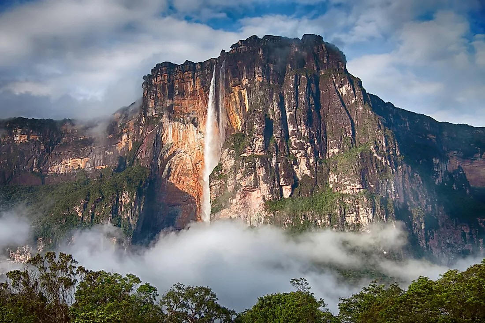

|
|
| Angel Falls is a waterfall in Venezuela. It is the world's tallest uninterrupted waterfall, with a height of 979 metres, and a plunge of 807 m. The waterfall drops over the edge of the Auyán-tepui mountain in the Canaima National Park, a UNESCO World Heritage Site in the Gran Sabana region of Bolívar State. |  |
.jpg) |
Isla de Margarita, part of Venezuela, lies in the Caribbean Sea about 40 kilometers north of the mainland. It’s a popular holiday destination, comprising 2 peninsulas linked by the sand and mangroves of the Laguna de la Restinga national park. Most people live, or stay, on the eastern peninsula, home to the cities of Pampatar, Porlamar and La Asuncion. |
| Choroní is a coastal locality in the far north of the municipality of Girardot, Aragua state, Venezuela. It is located on the outskirts of the coastal mountain range. This mountain range makes up the essence of the Henri Pittier National Park. |
 |
| <<<<--------HOME PAGE |